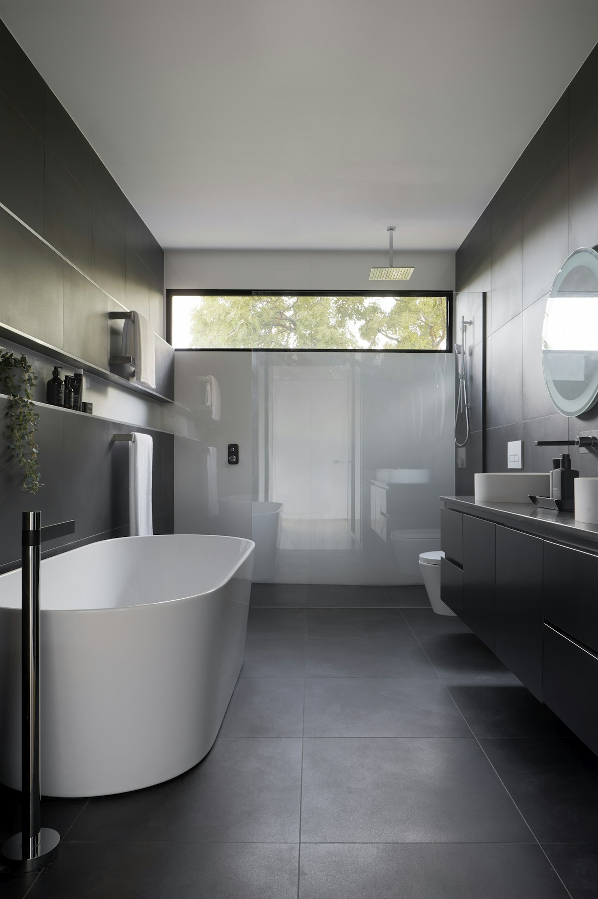
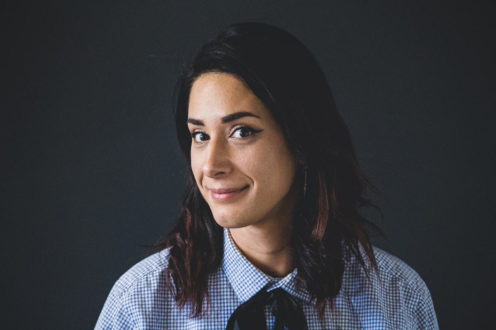

Alaposan ellenőrzött szakemberek
Minden jelentkező személyes interjún és képzésen vesz részt, mielőtt önállóan takarítást vállalhatna nálunk.
A legjobban értékelt takarítási cég Budapesten

Minden jelentkező személyes interjún és képzésen vesz részt, mielőtt önállóan takarítást vállalhatna nálunk.
Kizárólag prémium, kímélő és kellemes illatú, német minőségű tisztítószereket használunk minden munkánál.
Minden takarítás után visszajelzést kérünk, 1-5-ig értékelheti a munkát. Ha valami nem tökéletes, ingyen újra elvégezzük.
Akár hajnali 3-kor is rendelhet takarítást — szakemberünk már reggelre az otthonában lesz.
Minden helyiséget részletes, ellenőrzött lista alapján takarítunk ki.


15 000 Ft
~2 óra
20 000 Ft
~3 óra
26 000 Ft
~5 óra
32 000 Ft
~6 óra
Minden takarítás után visszajelzést kérünk ügyfeleinktől, és 1-5 csillagig értékelhetik a munkát. Ha bármi nem felel meg az elvárásainak, ingyenesen újra elvégezzük a takarítást — ez a minőségbiztosítási rendszerünk alapja.
Részletek a minőségbiztosításról →Pedagógiai végzettséggel rendelkezik, korábban óvodapedagógusként dolgozott.
Nagyon pontos és aktív, szereti a gyerekeket, korábban ápolóként dolgozott.

Nagyon szereti az állatokat, korábban adminisztratív területen dolgozott.
Nagyon szereti a gyerekeket, saját kisfia van, barátnője ajánlására csatlakozott hozzánk.
„Végre egy takarítócég, amire tényleg lehet számítani. Percre pontosan érkeztek, és a lakás ragyogott.”
★★★★★
Összesen 1015 vélemény budapesti lakástakarításról

„A takarító pontosan érkezett, és minden apró részletre figyelt. Azóta rendszeresen rendelünk.”

„Nagyon rugalmasak voltak az időpontegyeztetésnél, és a lakás illata is fantasztikus lett.”
„Az irodánkat takarítják hetente, mindig hibátlan munkát végeznek, ajánlom mindenkinek.”
„Felújítás után hívtuk őket, és szó szerint percek alatt eltűnt minden porszemcse.”

„Két gyerekkel nincs időm takarítani — ők pár óra alatt makulátlanná varázsolják a lakást.”
„Az applikációban egy perc alatt lefoglaltam az időpontot, minden gördülékenyen ment.”
Tudjuk, hogy az otthonába csak megbízható kezekben szeretné engedni az idegeneket. Ezért minden takarítást felelősségbiztosítással fedezünk, és szerződött, ellenőrzött szakemberek végzik a munkát.


Igen, az ablaktisztítás önálló szolgáltatásként is megrendelhető, négyzetméter alapú árazással.
Egy takarító önállóan nem vállal nehéz bútormozgatást, magas állványzatot igénylő munkát, sem szakipari (pl. villanyszerelési) tevékenységet.
Az előfizetéses takarítás rendszeres, előre ütemezett takarítást jelent (pl. heti vagy kétheti gyakorisággal), kedvezményes áron az egyszeri takarításhoz képest.
Minden jelentkező személyes interjún és gyakorlati képzésen vesz részt, referenciáit ellenőrizzük, és csak ezután dolgozhat önállóan ügyfeleinknél.
Jelezze felénk 24 órán belül, és díjmentesen újra elvégezzük az érintett területek takarítását.
Minden takarítást felelősségbiztosítás fedez, kár esetén gyors és korrekt kártérítési eljárást indítunk.
A fizetés a takarítás végén, az elvégzett munka ellenőrzése után történik, készpénzzel vagy bankkártyával.
Az alap takarítás nem tartalmazza a mennyezet lemosását, ez a nagytakarítás és felújítás utáni takarítás része lehet.
Ezek a feladatok jelentősen több időt és speciális eszközöket igényelnek, ezért külön, kiegészítő szolgáltatásként rendelhetők meg.
Igen, kárpitozott bútorok és szőnyegek vegytisztítását is vállaljuk, kültöni időpont-egyeztetés alapján.
Igen, a felújítás utáni takarítás egyik fő szolgáltatásunk — a por- és törmelékmentesítéstől az ablaktisztításig mindent elvégzünk.
A kitakarítunk. egy modern háztartási takarítási szolgáltatás, amely leveszi a válláról a takarítás terhét, hogy több ideje maradjon a fontos dolgokra. Alaposan ellenőrzött, képzett szakembereink prémium, környezetbarát vegyszerekkel dolgoznak Budapest és környéke otthonaiban és irodáiban.
Legyen szó heti fenntartó takarításról, egyszeri nagytakarításról vagy felújítás utáni portalanításról, csapatunk átlátható árazással és garantált minőséggel áll rendelkezésére — akár még aznap.
| Szobaszám | Ár |
|---|---|
| 1 szobás | 20 000 Ft |
| 2 szobás | 25 000 Ft |
| 3 szobás | 33 000 Ft |
| 5 szobás | 38 000 Ft |
| Szobaszám | Ár |
|---|---|
| 1 szobás | 15 000 Ft |
| 2 szobás | 20 000 Ft |
| 3 szobás | 26 000 Ft |
| 4 szobás | 32 000 Ft |
| Típus | Ár |
|---|---|
| Ház | 900 Ft |
| Nyaraló | 800 Ft |
| Iroda | 800 Ft |
| Ablaktisztítás | 3500–4200 Ft |
| Lakás | 900 Ft |
| Típus | Ár |
|---|---|
| Ház | 1300 Ft |
| Lakás | 1300 Ft |
| Nyaraló | 1150 Ft |
| Iroda | 1150 Ft |
| Ablaktisztítás | 3500–4200 Ft |
| Szolgáltatás | Ár |
|---|---|
| Fürdőszoba takarítás | 3200 Ft |
| Hűtő tisztítás | 3400 Ft |
| Konyhagép tisztítás | 5000 Ft |
| Mosogatás | 5000 Ft |
| Vasalás | 5000 Ft/óra |
| Erkély | 3400 Ft |
| Háziállat alom | 3300 Ft |
Rendszeres, gyors felfrissítés a lakás vagy iroda legfontosabb pontjain — a mindennapi tisztaság fenntartására.
Heti vagy kétheti rendszerességű takarítás, amely megőrzi otthona rendjét folyamatosan.
Alapos, mélyreható takarítás minden zugra kiterjedően — évszakváltáskor vagy különleges alkalmak előtt ajánlott.
Por- és törmelékmentesítés festés vagy építkezés után, hogy azonnal birtokba vehesse megújult otthonát.
Csíkmentes, ragyogó ablakok belülről és kívülről, magasban lévő nyílászárókhoz is.
Fix időpontban érkező, kedvezményes áron elérhető havi vagy heti takarítási csomag.
Vasalás, hűtő- és konyhagép-tisztítás, mosogatás — apró extrák, amik igazán sokat számítanak.
Kárpitozott bútorok, matracok és szőnyegek mélytisztítása szakértő géppel és vegyszerekkel.
Gondos szakember-kiválasztás, interjú és képzés minden takarító számára.
A minőség folyamatos ellenőrzése ügyfél-visszajelzések alapján.
Kizárólag professzionális, német minőségű vegyszerek használata.
Átlátható árazás, rejtett költségek nélkül.
Minden munkatársunkat személyes interjú és gyakorlati próbaidő előz meg, referenciáikat pedig leellenőrizzük, mielőtt önállóan dolgozhatnának. Emellett minden takarítást felelősségbiztosítás fedez, így az Ön otthona és értéktárgyai biztonságban vannak nálunk.
Irodánk címe: Budapest, Váci út 42.
Takarítóink Budapest teljes területén és a fővárosi agglomerációban is vállalnak munkát.